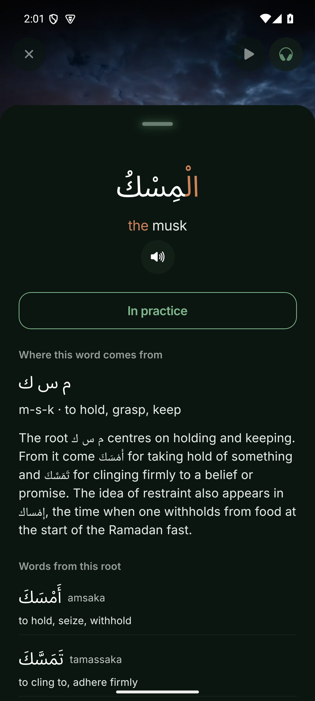

and when
This token combines the linking wa- with idha, a 'when/whenever' word that sets up a condition. Idha frames what follows as a recurring scenario, 'and whenever...', leading into a then-clause later in the sentence. So the word both connects and opens a conditional time-frame.
I saw
A past-tense verb with the -tu ending that marks an 'I' subject. Inside the 'whenever' frame it gives the repeatable trigger: each time I saw. The -tu suffix is what fixes the speaker as the doer.
a book
The object of 'saw', an indefinite noun ('a book') shown by its -an object ending, which marks both that it is unspecified and that it is what the verb acts on. Being indefinite is the point: any previously unseen book triggers the reaction.
did not
A small but powerful negator that, placed before a present-tense verb, pushes its meaning into the past and cancels it: it produces 'had not'. Its trick is that it changes both the time and the polarity of the verb at once, so the following present-looking verb actually means a negated past.
see it
The verb governed by the preceding negator, with -hu ('it') attached as its object pointing back to the book. Because of that negator the verb takes its clipped jussive ending and reads as past, 'had not seen it'. The shortened ending is the visible mark that the negator is controlling this verb.
so as if I
This token bundles fa- ('so/then') with ka'anna ('as if') and the attached 'I'. The fa- introduces the result of the 'whenever' clause, while ka'anna sets up a likeness or simile and braces the following statement. Together they launch the 'it was as though I...' main response.
I stumbled upon
A past-tense verb with the -tu 'I' ending, used here in a figurative sense of stumbling onto something. Sitting inside the simile launched by 'as if', it describes the imagined comparison rather than a literal event. The -tu again pins the speaker as the one acting.
on
A preposition 'on/upon'. This particular verb of stumbling-onto pairs with 'ala to introduce what one chances upon, so 'ala marks the treasure as the thing happened upon. It also forces the genitive on the noun that follows.
a treasure
The noun governed by the preceding 'on', indefinite ('a treasure') and in the genitive that the preposition requires. Its indefiniteness keeps the image general, any treasure, fitting the simile. It is the thing the figurative stumbling lands on.
Tap a word.
OpenArabic: Read the Classics
If you can sound out Arabic script, you can start reading classical texts.
Free. No ads. No subscription.
An account is needed in the app.
One tap gives you the meaning, a grammar note and audio.

Read the line
When I saw a book I had not seen before, it was as if I had stumbled upon a treasure.
and when
This token combines the linking wa- with idha, a 'when/whenever' word that sets up a condition. Idha frames what follows as a recurring scenario, 'and whenever...', leading into a then-clause later in the sentence. So the word both connects and opens a conditional time-frame.
I saw
A past-tense verb with the -tu ending that marks an 'I' subject. Inside the 'whenever' frame it gives the repeatable trigger: each time I saw. The -tu suffix is what fixes the speaker as the doer.
a book
The object of 'saw', an indefinite noun ('a book') shown by its -an object ending, which marks both that it is unspecified and that it is what the verb acts on. Being indefinite is the point: any previously unseen book triggers the reaction.
did not
A small but powerful negator that, placed before a present-tense verb, pushes its meaning into the past and cancels it: it produces 'had not'. Its trick is that it changes both the time and the polarity of the verb at once, so the following present-looking verb actually means a negated past.
see it
The verb governed by the preceding negator, with -hu ('it') attached as its object pointing back to the book. Because of that negator the verb takes its clipped jussive ending and reads as past, 'had not seen it'. The shortened ending is the visible mark that the negator is controlling this verb.
so as if I
This token bundles fa- ('so/then') with ka'anna ('as if') and the attached 'I'. The fa- introduces the result of the 'whenever' clause, while ka'anna sets up a likeness or simile and braces the following statement. Together they launch the 'it was as though I...' main response.
I stumbled upon
A past-tense verb with the -tu 'I' ending, used here in a figurative sense of stumbling onto something. Sitting inside the simile launched by 'as if', it describes the imagined comparison rather than a literal event. The -tu again pins the speaker as the one acting.
on
A preposition 'on/upon'. This particular verb of stumbling-onto pairs with 'ala to introduce what one chances upon, so 'ala marks the treasure as the thing happened upon. It also forces the genitive on the noun that follows.
a treasure
The noun governed by the preceding 'on', indefinite ('a treasure') and in the genitive that the preposition requires. Its indefiniteness keeps the image general, any treasure, fitting the simile. It is the thing the figurative stumbling lands on.
That was this page.
In the app, the English stays above the line.
Free as sadaqah jariyah.